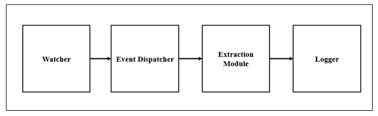
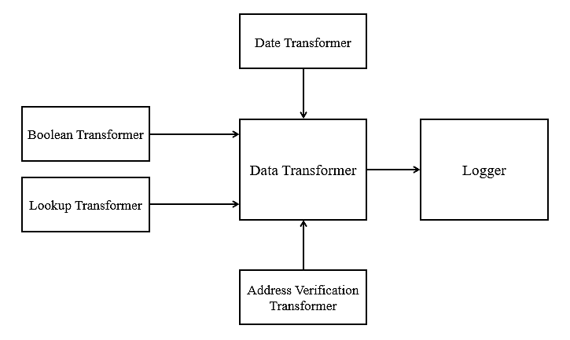
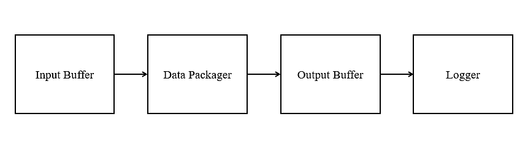

Integration test is the first step of the test plan where phases of the system are identified, and the system components are tested within those phases. The ETL Utility system has a clear distinction between three different modules: Extraction, Transformation, and Loading. Additionally, each module of the utility is dependent on the previous module, creating a need to build and test the extraction module first and the load module last. Given these conditions, the system's integration testing will occur in three phases, each corresponding to a module according to the system architecture.
Dividing the testing process into separate phases will ensure that testing can be focused appropriately and align with the critical path of the system’s overall development. This also ensures that defects are identified early and can easily be attributed to the currently tested module.
Following this approach, the integration testing process begins with the module that is required for the other two modules to function, Extraction. Following extraction, transformation will be tested, and lastly, loading. Since this test plan follows the dependency path between these modules, the foundations will be solidified, and high priority defects addressed before proceeding to the next module. Brief testing strategies per each module have been identified
The purpose of the extraction module is to ensure the system can source data from multiple file formats to be then transformed. The foundation for this system is to identify new or modified data from the source systems so that the target system can use it. The other system modules require that the extraction module be complete and correct for the system to function as a whole. Thus, the extraction module should be tested first, and the test cases identified highlight each source system identified in the requirements. Figure 2 shows the modules that form the Extract Subsystem. The arrows represent the order of integration, i.e., integration testing.
The table below outlines the tests required for the extraction in the ETL Utility, along with the expected results of the test case.
|
Test Case # |
Description |
Expected Result |
|
IT-1 |
Watcher -> Event Dispatcher |
Verify that the Watcher is notified about the change. Verify that the Event Dispatcher is triggered. |
|
IT-2 |
Event Dispatcher -> Extraction Module |
Verify that the Event Dispatcher created an event with a copy of the updated data. Verify that the Event Dispatcher has notified the Extractor. |
|
IT-3 |
Extraction Module -> Updating Existing Data |
In the source document, make a change to the existing data and validate that the new changes were extracted. |
|
IT-4 |
Extraction Module -> Creating New Data |
In the source document, make a new record in the data and validate that the new record was extracted. |
|
IT-5 |
Extraction Module -> JSON datasource |
Using a JSON datasource, make a new record and modify an existing record to ensure changes are captured. |
|
IT-6 |
Extraction Module -> SQL database |
Using a SQL database datasource, make a new record and modify an existing record to ensure changes are captured. |
|
IT-7 |
Extraction Module -> CSV datasource |
Using a CSV datasource, make a new record and modify an existing record to ensure changes are captured. |
|
IT-8 |
Extraction Module -> XML datasource |
Using a XML datasource, make a new record and modify an existing record to ensure changes are captured. |
The purpose of the transformation module is to ensure the system can convert the extracted data into the necessary formats so that it can be loaded in another data source. Figure 3 shows the modules that will form the Transform Subsystem.
The table below outlines the tests required for the transformation in the ETL Utility, along with the expected results of the test case.
|
Test Case # |
Description |
Expected Result |
|
IT-9 |
Date Transformer -> Data Transformer |
Verify that Date is correctly transforming string-based dates (YYYYMMDD) into a UTC Date Object YYYY-MM-DDT00:00:00+00:00. |
|
IT-10 |
Boolean Transformer -> Data Transformer |
Verify that the Boolean Transformer is correctly transforming the string-based boolean data to a true boolean. |
|
IT-11 |
Lookup Transformer - > Data Transformer |
Verify that the Lookup Transformer is correctly transforming the lookup key into a more complex object that contains the values that the key represents. |
|
IT-12 |
Address Verification Transformer -> Data Transformer |
Verify that the Address Verification Transformer is correctly verifying the existence of the postal address.Verify that the postal address is correctly formatted by the third-party verification service. Verify that the transformed data is in the destination acceptable format. |
The purpose of the load module is to load the transformed data using a collection of load objects and load that data into its respective destination. Figure 4 shows the modules that will form the Load Subsystem.
The table below outlines the tests required for the loading in the ETL Utility, along with the expected results of the test case.
|
Test Case # |
Description |
Expected Result |
|
IT-13 |
Input Buffer > JSON |
Validate that transformed records can be transferred to a JSON format. |
|
IT-14 |
Input Buffer > SQL Database |
Validate that transformed records can be transferred to a SQL database format. |
|
IT-15 |
Input Buffer > CSV |
Validate that transformed records can be transferred to a CSV format. |
|
IT-16 |
Input Buffer > XML |
Validate that transformed records can be transferred to an XML format. |
|
IT-17 |
Transformation Output |
Validate that the transformed data is sent to the load module. |